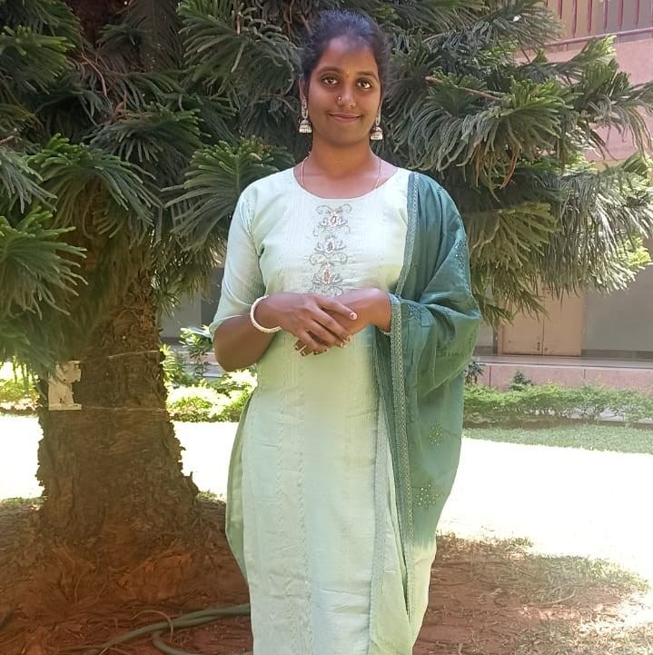

Aspiring Software Developer and Data Analyst with hands-on experience in Python, Java, SQL, Machine Learning and Web Development. Passionate about building scalable applications, automating processes and transforming data into actionable insights.

I am an MCA student at JSS Academy of Technical Education with strong academic performance and hands-on experience in software development, machine learning, automation and data analytics.
My interests include application development, database systems, machine learning, and extracting meaningful insights from data.
MCA CGPA
B.Sc CGPA
Projects
Internships
Developed a team-based automation tool using Python, Playwright, Pandas and Regular Expressions for real-time product data extraction from e-commerce admin dashboards. Implemented automated login, page navigation, pagination handling and Excel report generation, significantly reducing manual effort and improving data accuracy.
Built a deep learning solution using InceptionV3, Flask, OpenCV and GradCAM to classify histopathology images for ovarian cancer prediction. Implemented image preprocessing, model training, visualization of critical regions and performance evaluation to support reliable medical image analysis.
Developed a real-time web application using Flask, OpenCV and JavaScript that enables webcam capture, image uploads and multiple image processing operations. Implemented interactive features including live previews, transformations and downloadable processed outputs for enhanced user experience.
Designed and developed a desktop application using Python, Tkinter and SQLite for efficient employee record management. Implemented secure CRUD operations, search functionality and database integration, enabling streamlined management of employee data.
Worked on an AI-powered eCommerce Marketplace project involving product initialization, SKU generation and inventory management. Performed product testing using an in-house Python application, identified issues, validated functionality and contributed to improving product quality and operational efficiency.
Completed a Python internship focused on software development, programming fundamentals and database interaction. Collaborated in a team-based system design project, strengthening problem-solving, logical thinking and practical software development skills.
JSS Academy of Technical Education
CGPA : 9.26B.M.S College for Women
CGPA : 9.39Completed Web Development Fundamentals certification with an understanding of HTML, CSS and JavaScript. Developed skills in building responsive web interfaces and creating interactive web applications.
Completed Introduction to Data Science certification with hands-on exposure to data processing, analysis and visualization. Learned techniques for extracting insights from real-world datasets and supporting data-driven decision making.
Completed Introduction to Machine Learning certification covering supervised and unsupervised learning concepts. Gained practical experience in data preprocessing, model evaluation, classification and clustering techniques.
Received a cash prize for scoring centum in three subjects during B.Sc and achieving the highest score among more than 100 students.
Secured First Prize at Utsav 2024 and received a cash award of ₹3000, competing against more than 30 teams. Demonstrated creativity, teamwork and presentation skills.
Won Second Prize in Kalarav 2024, a national-level singing competition, showcasing confidence, dedication and performance excellence.
Coordinated between the placement office and postgraduate students, facilitating communication, resolving queries and supporting placement activities for multiple recruitment drives.
Represented classmates in academic and administrative matters while coordinating activities and promoting effective communication among students and faculty.
Actively participated in Rotary Club initiatives, contributing to community engagement, event coordination and teamwork.
Email: lalitha.shivakumar.2003@gmail.com
Location: Bengaluru, Karnataka